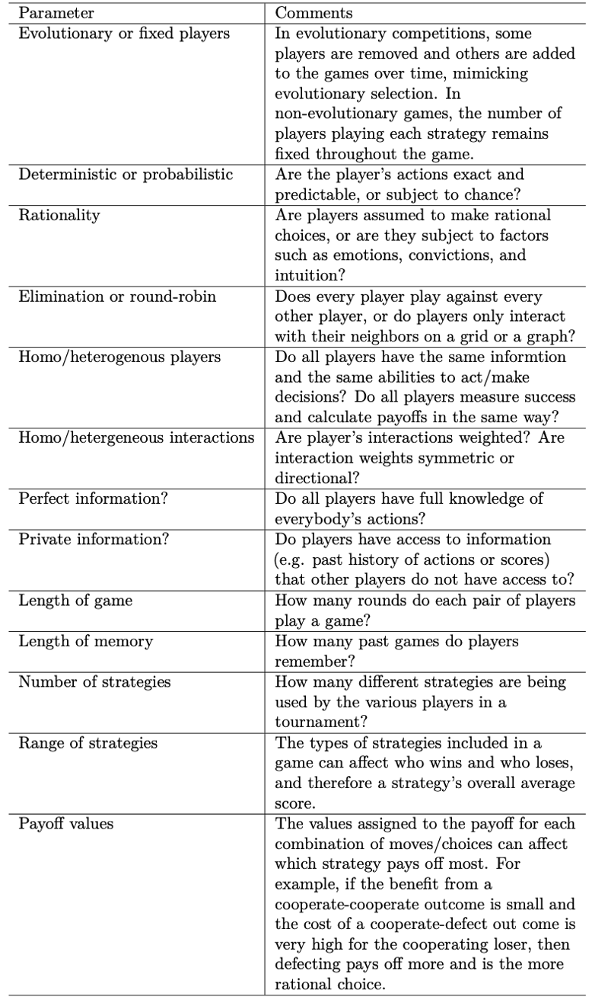
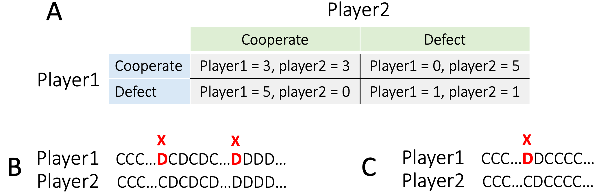
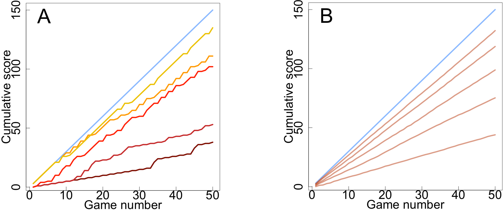
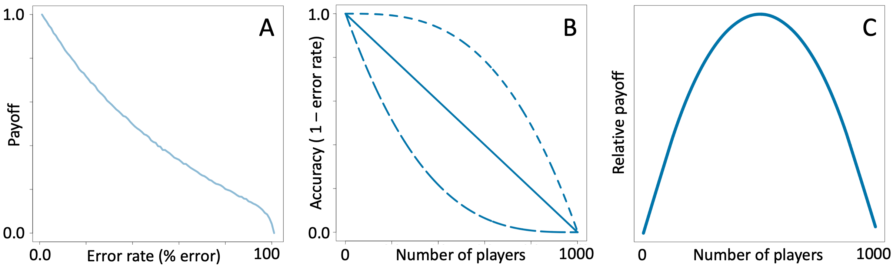
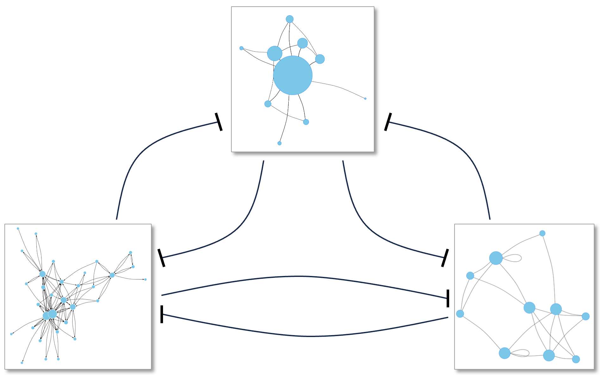
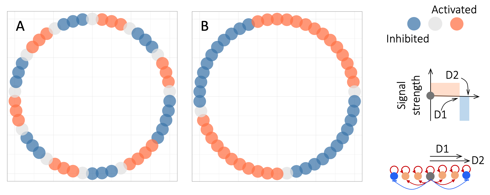
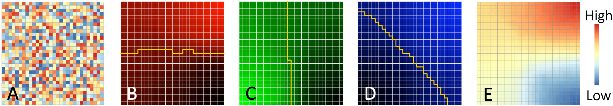
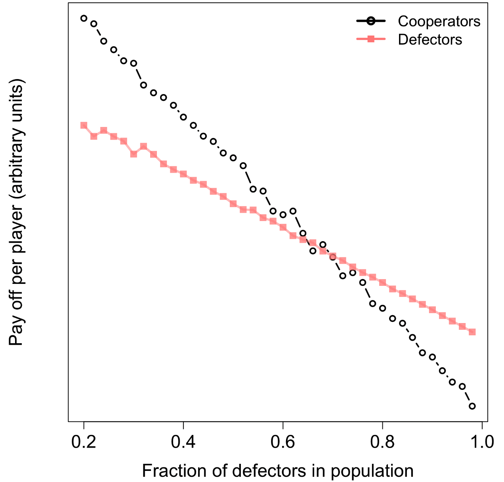
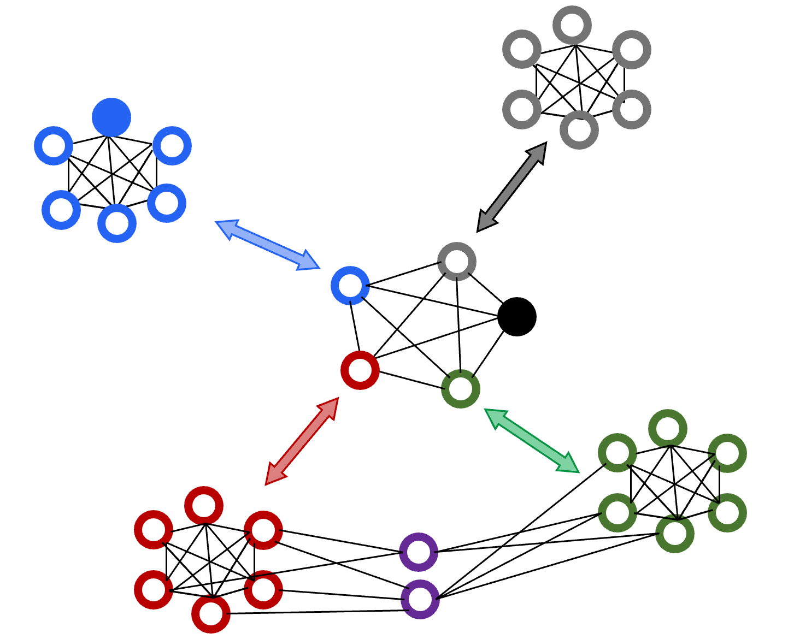

6 How “Us” and “Them” Arise Naturally
In previous chapters, we saw that RAP arises when entities (e.g. people) with self-reinforcing feedback loops compete for limited resources, individually or in groups. My aim in this chapter is to show that positive feedback loops among humans arise naturally through mutual aid, trade, and cooperation with people we trust. While cooperating within our “in-groups”, we end up competing with other, similarly-formed, “out-groups”. Within-group cooperation and between group competition then leads to RAP.
As discussed earlier, competition for cost-effective resources arises naturally whenever there are multiple, self-interested parties. As we will see in the next chapter, within-group positive feedback also arises naturally and frequently in Human Systems. These characteristics make polarization a self-organizing process: something that will happen even in the absence of people or organizations intentionally agitating for it.
Over time, we come to think of our cooperative in-groups as “Us”: people who are like us, people we can trust and rely on. At the same time, perhaps to justify the zero-sum nature of inter-group competitions, we increasingly see the groups we compete with as “Them”, people not like us. We experience this daily with respect to women’s rights, race-relations, and economic and political polarization. Here, for example is Keith Payne in his 2017 book about the psychological impact of income inequality 1:
Behavioral experiments and historical data both point to the same conclusion: As our economic worlds diverge, so too do our politics. It becomes ever more difficult to see those on the other side of the aisle as well-meaning individuals who share our goals but differ in what they believe are the best means to reach them.
“Birds of a feather flock together” is a common saying. But, in terms of our in-group coalitions, what factors determine who is in and who is out of the “Us” group? Certainly, competition can create dividing lines. But how do we choose who to compete against and who to cooperate with? If it’s simply a matter of people who are “alike”, where do we draw the boundaries, and why?
The role of competition in nature has been much debated since Darwin proposed “survival of the fittest” as a cornerstone of evolution 2. The idea that cooperation and competition are both hallmarks of nature, goes back at least to the anarchist Pyotr Kropotkin’s 1902 book 3 “Mutual aid, a factor for evolution”:
[…] though there is an immense amount of warfare and extermination going on amidst various species, and especially amidst various classes of animals, there is, at the same time, as much, or perhaps even more, of mutual support, mutual aid, and mutual defence amidst animals belonging to the same species or, at least, to the same society. Sociability is as much a law of nature as mutual struggle.
6.1 Cooperation as Positive Feedback
The dictionary definition of cooperation – two or more parties working together towards a common goal – is very broad and vague. That is because cooperation can take many forms and can be characterized from a variety of perspectives. For example, cooperation can be forced (as in military draft), voluntary (as in volunteering), or unintentional (as in the public-education benefits of online posts). It can be mutual (where everybody wins), or one-sided (e.g. people helping an accident-victim); direct, or indirect (e.g. collective action through small donations); within a tightly-defined group (such as a family) or across-categories (as in the digestive role of human gut microbes 4). Finally, it can be open to all (e.g. charities), or closed (e.g. elite clubs).
In the context of polarization, the key characteristic of cooperation is that it can act as a positive feedback loop if (i) it is mutual (I scratch your back and you scratch mine), (ii) it is recurring (not a single event), and (iii) the benefits of cooperation are not limited to a narrow set of conditions 5,6. The first criterion turns cooperation into a loop, which is a pre-requisite for feedback. But note that reciprocal cooperation need not be direct (it may involve a chain of events). No does have to be person-to-person (it could involve individual-group interactions, as in cooperative societies). The second and third criteria ensure that the effects of the feedback loop created by mutual-cooperation are ongoing, and not just a passing event. An analogy would be the distinction between a criminal who cooperates with the prosecution to get a more lenient sentence, versus one who is recruited as a long-term informant.
Mutual trade is a good example of cooperative positive feedback. In an 1817 book 7, the British economist and politician David Ricardo proposed one of the earliest mathematically-formulated scenarios in which cooperation benefits both (or all) parties. Ricardo argued that since the natural, economic, and historical resources of countries differ, each country can produce certain goods more efficiently than others. Thus, if two countries agree to trade goods that they produce more efficiently, then both countries’ economies will be more efficient and therefore better off.
Note that although Ricardo formulated his ideas in the terms of economic trade, the principle applies to any non-trivial endeavor. For example, if you work in a division or department of a larger organization, you are engaged in Ricardian cooperative trading: your book-keeping and finances are taken care of by specialists in one department while specialists in another department watch out for your online security, and so on. Within the organization, individuals specialize and trade skills, and as a result the organization as a whole (and therefore its members) achieve much more than if each member tried to do everything single-handedly.
In principle, Ricardo’s strategy does not require an external enforcer. Whenever two individuals, or groups of individuals, have complementary resources or expertise, it will be to their mutual benefit to specialize and trade. But, if we have known since 1817 that cooperation is much more productive than an “everyone for themselves” strategy, why isn’t the world brimming with happily cooperating nations, tribes, businesses, and so on?!
One problem with Ricardo-style trading is that it can inhibit the development of local expertise and industries, making each party dependent on the other, and therefore vulnerable to extortion. As a result, “specialize and trade” strategies are only attractive if each partner can trust the other(s) not to cheat or bully in order to increase their benefits 42.
Some of the risks of trading associated with trust can be avoided by the collective creation of laws, and of agencies to enforce them (e.g. the regulation of international trade by The World Trade Organization). But in settings where trade partners are not of equal strength/stature, such laws themselves are susceptible to bullying by the stronger partner. Unequal partners also have to deal with the fact that they have different carrying capacities. The US imports billions of dollars of semiconductors from Taiwan annually. But with a population less than a tenth of the size of the US population, there is a limit to how much Taiwan can buy from the US. Evidence from psychology experiments suggests that traders accept such trade imbalances so long as they consider each other honest and trust-worthy 8,9. To sum up, cooperation provides better outcomes for everybody when people can trust each other. To get more nuanced insights into when cooperation is preferrable to “everyone for themselves” strategies, we need to turn to Game Theory, the scientific study of strategic interactions.
6.2 Prisoner’s Dilemma and the Emergence of Cooperation
In all the systems we have explored so far, the outcomes of the interactions among the parts of a system depend on a fixed number of continuously-varying quantities. The behaviors of such systems are best modeled using differential equations. In contrast, many human interactions (as well as games such as chess, bridge, etc.) involve decisions based on quantities that only take discrete values. Systems of interactions among two or more participants where each participant’s best choice of action depends on the actions of the other participants, are known as games of strategy, and studied using Game Theory.
Since the publication of the book “A Beautiful Mind” (1998), and the release of the movie of the same name (2001), John Nash and Game Theory have become household names. But the study of strategic analysis and planning can be traced as far back as the fifth century BCE Chinese military treatise “The Art of War” 43.
Game theory became a scientific discipline and a branch of mathematics in 1928, when John von Neumann (then only 25 years old) published a 42-page research paper (originally in German) starting with the deceptively simple formulation 10:
[…] n players are playing a game. How must one of the participants play in order to achieve a most advantageous result?
In the near-century since von Neumann’s paper, Game theory has become a major field of research impacting virtually every other field of science, but especially economics, political and social sciences, biology, computer science, psychology, and philosophy. Here, we are concerned with one specific finding: how cooperation emerges naturally, and its limits. Note that cooperation in this context is a mutually-agreed strategy that the players must discover for themselves, not something forced on them by an external arbiter or ruler. For the sake of brevity, in this chapter, I will focus on one particular example (Prisoner’s Dilemma) of a class of Game Theory models known as Collective Action Dilemmas. The conclusions I draw here regarding Prisoner’s Dilemma, are equally applicable to another game in this class, the Tragedy of the Commons, that we will discuss later 11,12.
The Prisoner’s Dilemma game was invented in 1950 44 by Merrill Flood and Melvin Dresher in the context of international nuclear arms strategies. Since then, dozens of books and thousands of papers have been written on Prisoner’s Dilemma. The game involves two crime suspects who are interviewed in separate rooms by the police. They are each offered freedom if they “defect” and give evidence against their partner, who will then get a long sentence. On the other hand, if they both maintain solidarity (cooperation), the evidence against them is weak, and so they will each get a short sentence. In a landmark 1984 book, The Evolution of Cooperation (Basic Books), Robert Axelrod describes the players’ conundrum pithily:
In the Prisoner’s Dilemma game, there are two players. Each has two choices, namely cooperate or defect. Each must make the choice without knowing what the other will do. No matter what the other does, defection will yield a higher payoff than cooperation. The dilemma is that if they both defect, both do worse than if both had cooperated.
The game is a tragedy in which both players know that mutual cooperation is the best strategy for both of them, but they also know that it is unachievable. If one player chooses to cooperate, the other’s highest-payoff option is to defect. Once they both realize this, their only rational choice is to defect and lose.
However, it turns out the tragedy can be avoided if players play against each other repeatedly and can remember their past encounters (this version of the game is called the Iterated Prisoner’s Dilemma). In that case, a winning strategy that encourages cooperation emerges as long as three conditions are satisfied.
First, the reward for cooperation must be larger than the average of the payoffs for when one player cooperates and the other player defects. This is necessary because otherwise, a strategy of alternating defection and cooperation will do best, which defeats the whole point of the game.
The second requirement for the emergence of cooperatively is that at each encounter the players at least make an effort to maximize their chances of winning. This condition is necessary because some strategies, such as always defecting, exclude the possibility of fruitful cooperation.
Third, and perhaps most important, cooperation only emerges if our measure of success is not how many games we win, but rather how many points we accumulate when playing many games against many different players 13. In other words, cooperation emerges as a winning strategy only if we value long-term benefits more than short-term success.
Most sports tournaments (e.g. soccer, tennis) are assessed on the basis of wins. This is presumably because the whole point of sports tournaments is to compete. Accordingly, sports events encourage cooperation within teams, but not between them. In contrast to sports, success in most business, political, and social interactions depends more on accumulating beneficial results than on winning any one specific strategic interaction. For example, in ice-cream-van wars, losing turf in one neighborhood does not matter if it sharply increases your profits elsewhere. Likewise, politicians are usually judged, not on the basis of whether they won or lost a single initiative, but on the basis of their overall performance across multiple years.
Over the past 75 years, an enormous number of strategies for playing the iterated Prisoner’s Dilemma have been studied. Many of these address challenging situations that can arise when considering all possible competing strategies. For example, in real-life, players may make mistakes when recalling the past, or they may deviate from their preferred strategy because of mood, stress, etc. In such cases, the game becomes probabilistic. We will return to probabilistic games shortly, but let us start with a simple deterministic cooperative strategy called Tit-for-Tat (TfT for short).
TfT always starts by cooperating. Thereafter, TfT always responds using the last choice/move of the other player. By always cooperating in its first move, TfT, signals its intention to play ‘nice’. After that, each time the other player cooperates, TfT reciprocates, encouraging further cooperation. At the same time, by immediately retaliating against defections, TfT discourages uncooperative behavior.
Always cooperating in the first move is key to encouraging cooperation, but it also means that TfT essentially sacrifices the first game. As a result, TfT never scores better than its opponent in any single game. But if a game is played multiple times and there are many players with differing strategies (analogous to the setting of biological evolution), then across all the games played, TfT accumulates the highest score (analogous to having a high evolutionary fitness). So, if a player’s goal is to win a particular game, TfT would be a bad choice. But if their goal is to earn the highest returns accumulated over a large number of games played by diverse competitors, then TfT is a great choice.
TfT was invented by the remarkable polymath, concert pianist, and peace activist Anatol Rapoport 14 who mentioned it in passing in the conclusions of a 1965 book on the Prisoner’s Dilemma 15. It gained widespread attention 15 years later after repeatedly winning competitions organized by the political scientist Robert Axelrod. In a 1981 paper analyzing the results of these competitions, Axelrod and William Hamilton showed that TfT tends to emerge and take hold even in relatively hostile settings 16.
The version of Prisoner’s Dilemma that TfT dominated was a highly simplified version of real-life interactions in order to keep analyses tractable. In the decades since Axelrod’s competitions, researchers have explored increasingly complex, more life-like versions of the game. Table 6.1 lists some of these additional considerations.
Table 6.1 is far from an exhaustive list of all the different ways that the Prisoner’s Dilemma game can be implemented and assessed. In fact, the number of possible variations is so large that we may never be able to say that current observations apply to all (reasonable) possible variants of the game. However, investigations so far have largely confirmed Axelrod and Hamilton’s conclusions about the emergence of cooperativity, and improved on TfT’s propensity to cooperate in challenging situations.

Table 6.1. Example design variations of the Prisoner’s Dilemma game.
In 1993, Martin Nowak and Karl Sigmund showed 17 that in settings where players can make occasional mistakes (or are subject to evolutionary mutations), TfT is too unforgiving (illustrated in Figure 6.1.A-B). To address this shortcoming, they proposed a more forgiving variant of TfT called Win-Stay, Lose-Shift (WSLS). Like TfT, WSLS always starts by cooperating, but unlike TfT, WSLS chooses to cooperate if both players defected in the previous round, a more optimistic and forgiving strategy than TfT. The key take-away for our purposes is that even in the presence of noisy, unreliable, or evolving decisions, cooperation wins. As Martin Nowak put it in a later article 18:
[…] mathematical analysis shows that winning strategies tend to be generous, hopeful and forgiving. Generous here means not seeking to get more than one’s opponent; hopeful means cooperating in the first move or in the absence of information; and forgiving means attempting to re-establish cooperation after an accidental defection. […] If I am willing to let others have a slightly bigger share of the pie, then people will want to share pies with me.

Figure 6.1. Example Prisoner’s Dilemma payoff table and run results. A. Example payoff table showing the score given to each player following a single step in which player1 chooses one of the two rows and player2 chooses one of the two columns. “Payoff” is defined as prison-years avoided. B. Example sequence of moves by two competing TfT players. Here, C stands for cooperate, and D stands for defect. Initially, both players cooperate and receive 3 points each. The red letters marked with an X are example errors, where player1 plays a D when they should have played a C according to TfT. The first error results in alternating cycles of CD and DC, giving each player an average score of 2.5. The second error produces and endless sequence of mutual defections, giving each player an average score of only 1. Panel C shows how WSLS playing against itself responds to the same situation. After an erroneous D move, both players play D for one game and then switch back to the better scoring C-C.
Consistent with the above theoretical studies, in experiments, human players tended to choose strategies similar to a slightly more generous version of TfT 19 about 30% of the time, and strategies similar to WSLS 17 about 70% of the time. Interestingly, a key difference between the actions of human players and the published strategies was that human players quickly spotted and punished players who defected all the time 20, thus further encouraging cooperativity.
A number of additional findings suggest that cooperativity may be even more common among humans in particular. For example:
If players can learn about their counterparts by observing their interactions with others (e.g. via reputation, or reviews on online shopping sites), then cooperation can emerge more easily even when observations are noisy and the number of interactions per player is limited 21,22.
Cooperativity arises more easily when interactions among participants occur in community-networks that facilitate rapid spread of reputation and related information 23,24.
The presence of strong ties among a subset of participants can act as a seed and facilitate cooperativity across all participants 25,26.
There are also situations that can arise in human networks that inhibit cooperativity. For example, inequality reduces the likelihood of cooperation, and extreme inequality may exclude the possibility of cooperation altogether 27. However, on balance, the above observations suggest that cooperativity will arise automatically and be very common among humans. In that case, why don’t we experience cooperativity in every one of our interactions, everywhere, and all the time?
6.3 The Limits of Cooperation
I mentioned above that in an evolutionary setting, where mistakes or mutations cause some players to deviate from their strategy, WSLS emerges as a winning strategy and results in cooperation among all players who are open to it. However, strategy-deviations caused by mutations are relatively rare events. In real-life human interactions, we may not remember past encounters perfectly, and we often make mistakes due to factors such as moods, emotions, and convictions. Many other factors also affect the reliability of human interactions, for example:
The time between interactions may be long, making it difficult for players to remember each other’s past actions.
If the total number of interactions between two people is small, the benefits of cooperation will be reduced for both parties (which is why restaurants in tourist locations often automatically include tips in the bill).
Humans tend to have many ongoing interactions with different people (e.g. family members, colleagues, service-providers). This is analogous to playing many games simultaneously, and reduces our ability to remember past interactions perfectly.
Because of all these issues, interactions among humans can be quite noisy. Figure 6.2 illustrates how error-prone human interactions reduce the cumulative payoff of WSLS.

Figure 6.2. The payoff from cooperation declines when interactions become more noisy. Panel A Shows the average cumulative score for one tournament of 50 games played by two WSLS players. The top line indicates the cumulative score for a game with no errors, at the end of which, each player has scored 3-points x 50-games = 150 points total. The curves below the top line, are for error rates of 10%, 30%, 50%, 70%, and 90% from top to bottom. Panel B shows the average performance of the players in (A) after 10 rounds of 50 games per round.
As expected, WSLS becomes less and less efficient as players make more and more mistakes. We cannot cooperate usefully with everybody in the world because we get less and less efficient as we try to cooperate with more and more people.
How many people should we try to cooperate with? The answer depends on many factors, including the payoff values (see example in Figure 6.1A), the range of strategies used by the other players, and the relationship between the fraction of times we make mistakes and the number of people we interact with. In the next chapter, I will review evidence that for humans, close, personal relationships tend to be limited to about 150. But there is no single magic number of collaborators that will be optimal in all settings. But in general, we are better off having strong collaborations with a limited number of others rather than unreliable collaborations with everybody in the world. This tradeoff is illustrated schematically in Figure 6.3.
To recap, cooperation arises naturally in human interactions and is an effective strategy for maximizing our productivity. At the same time, there are limits to how many people we can usefully cooperate with. The optimum number of cooperators will vary according to the people involved, the types and frequencies of our interactions, and many other factors.
There are a number of things we can do to help us cooperate with more people. For example, we can try to remember past interactions more accurately by drawing on “indirect information” in the form of community ratings and reputation. But there will always be a limit to how many others we can effectively cooperate with.

Figure 6.3. The limits of cooperation. A. Example relationship between payoff (tournament cumulative score) and frequency of erroneous responses in the Prisoner’s Dilemma game. The curve is based on the data presented in figure 6.2. B. Three examples of how interaction accuracy may decline with increasing numbers of players. The exact shape of such curves will depend on the tournament details. The curves shown are hypothetical and for illustration purposes only. C. The relationship between overall payoff and the number of interacting players using the data in panels A and B. The curve shown is qualitatively representative of all three scenarios in panel B. A player cooperating with too few others fails to capitalize on the better payoff associated with cooperation. On the other hand, a player attempting to cooperate with too many others becomes error-prone and scores lower (as illustrated in panel A).
If we can only usefully cooperate with a limited number of people, who should they be? Reliable interactions offer the best payoff. And apart from a few special cases such as parent-child relationships, our most reliable interactions are usually with people that we have known a long time and interact with frequently. As we saw earlier, longstanding and frequent interactions are also the conditions for the emergence of cooperation as a winning strategy. So, if we were somehow able to routinely interact with people outside our default everyday circles, it is likely these relationships would also lead to reliable collaborations.
Conversely, the people we “Other” are primarily the people we are least exposed to. Most likely, we didn’t have the bandwidth to cooperate with them effectively. We had limited resources, and had to make a choice about who to collaborate with. Consciously or unconsciously, we drew a mental line and some people fell outside our “us” group. On the peripheries of our in-group, who is and isn’t included in our “us” group, may be as random as whether we decide to dive into an elevator as the doors close, or wait for the next one.
Over time, cooperative groups tend to acquire shared characteristics (e.g. a shared language, or a common trading currency) that further facilitate and stabilize within group cooperation 28. At the same time, it is natural for us compete for limited resources with individuals or groups outside our circle of friends.
Figure 6.4 offers a visually summary of what Game Theory tells us about the structure of cooperative and competitive interactions in Humans Systems. In the summary figure presented at the end of Chapter 3, I showed just two mutually-supporting individuals in each ‘group’ involved in SALI interactions. Figure 6.4 is essentially the same as that figure, but now there are multiple cooperating individuals in each community. In this view, groups (tribes, companies, etc.) are clusters of directly or indirectly cooperating individuals. Groups can be any size as long as they support reliable interactions. Within each group, who cooperates with whom will depend on local conditions, customs, etc., as long as the benefits of cohesion and cooperation percolate to all group members. Runaway Polarization arises when such groups compete for limited resources with other groups.

Figure 6.4. Updated visual summary of our model of the human interaction networks that drive Runaway Polarization (RAP) through short-range activation and long-range inhibition (SALI). Each square box represents the nominal boundary of one cooperative group. The interaction networks that indicate cooperation among group members are shown schematically as graphs with distinct sizes and structures. The competitive interactions among the groups are shown as black curves ending in bars indicating inhibition.
6.4 Short-range Activation and Long-range Inhibition Among Human Groups
We have seen that – under the right circumstance – cooperation is more productive than going it alone, and that the benefits of cooperation decline as the number of interacting people increases. Laws, social norms, and reputation can help increase the size of cooperative groups, but there will always be a limit to the size of cooperative groups. When such groups end up competing for limited resources, we end up with SALI-dynamics and RAP. Cooperate-compete dynamics like this can operate at any scale, ranging from individuals to large societies where the rules that underpin cooperation are enforced by laws and police forces.
Individual sports are a good example of when SALI dynamics apply to individual players. A tennis star’s earnings are typically proportional to her performance, which is often subject to positive feedback via better training opportunities, better support-services, and greater crowd support on-court. At the same time, because the total amount of prize-money is fixed, every time a tennis star wins a tournament, she inhibits the earnings potential of her competitors, creating SALI-like dynamics that allow a handful of top players dominate the game for long periods.
More often, human activities are often group based, as in families, social-circles, tribes, businesses, political parties, sports teams, etc., in which there is within-group cooperation, accompanied by competition with other groups 45. Take sports teams as an example. When a sports team wins, all team members benefit, directly (e.g. better pay and training) and indirectly (e.g. recruitment of better coaches and athletes who will boost team performance as a whole), creating a positive feedback effect. At the same time, when a team competes with other teams, it inhibits the earnings of the other teams.
How does a particular individual end up inside or outside a cooperative group? Sometimes, group membership is simply bestowed on us. For example, children don’t get to choose their parents or siblings. Membership of many other groups, for example sports teams, professional armies, and businesses is often the result of personal and group choices. Beyond these two categories, there are groups that we choose to join, like attending a particular place of worship, or becoming a member of an online forum, a reading circle, or a social/political action group. Needless to say, like most other things involving humans, group memberships are rarely based on a simple, single reason. Notwithstanding all these complexities, to the extent to which our group memberships are not imposed on us, why do we choose to cooperate with some people and compete with others?
When SALI is applied to biological systems (where SALI has been most widely studied), a model is created by fitting it to the data. Such models do not explain how or why evolutionary forces led to the particular configuration of the model. They just describe the (hypothesized) mechanisms that created the data they are based on.
To illustrate this point, Figure 6.5 shows patterns formed by a SALI model under two different configurations. The only difference between the two models is that in (A) each node has an interaction range of three nodes. In contrast, in (B) each node can interact with its 11 nearest neighbors. In each model, the nodes were initialized by setting a single randomly-chosen node to active, and the model is run until a stable pattern of activated (coral) and inhibited (blue) nodes has emerged.

Figure 6.5. Illustration of how interaction strengths and distances determine group size in a Short-range Activation and Long-range Inhibition (SALI) model 29. In the model, 50 nodes (colored disks) are placed on a circle. For simplicity, each node can only be active (choral), inactive (gray), or inhibited (blue). At the start of a simulation, a single random node is set to active and the rest are left inactive. Each node has positive feedback onto itself and its nearest neighbors, while inhibiting neighbors further away (see schematics in legend). The model is run until it approaches steady-state. A. Model with interaction range of 3 nodes. B. Model with interaction range of 11 nodes.
The specific pattern that emerges from each simulation run depends on both the ranges and strengths of the activation and inhibition signals, as well as the initialization pattern. For our purposes here, the details do not matter because we are not trying to make a predictive model of a specific system, but to highlight some general characteristics of SALI models.
Three important points emerge from Figure 6.5 First, as expected, we see that SALI leads to polarized patterns of coral nodes and blue nodes. Second, the patterns that emerge involve segregated clusters of same-colored neighbors. The third and most important point for our purposes here is that the sizes of the same-color clusters are defined in part by the range and strength of the interactions among the nodes in the model. In other words, the sizes of the coral/blue communities are not pre-specified in any way. They are emergent outcomes of the feedback interactions among the nodes.
In the above example, I simply specified the model parameters to vary the cluster sizes. In real-life, the parameters of a SALI system evolve over time to improve the system’s operational performance. For systems that have been undergoing this process of optimization for some time (e.g. rich/poor neighborhoods in some cities), repeated trial and error events will usually tune the system parameters to generate stable patterns given subject to any constraints imposed on the system (e.g. social norms and laws). The point is that cooperative group boundaries are usually not imposed top-down. They are emergent, self-organized properties of the system and the constraints that the system operates under. I will return to this point in a moment. But first, there is one more question I detail that I need to pin down.
In the examples in Figure 6.5, the emergent zones of activation and inhibition have a stereotypic alternating pattern that reappears every time the model is run. However, the absolute (as opposed to relative) positions of the activation/inhibition zones depend on the location of the seed node that initiates the pattern-formation process.
In practice, the patterns that initiate SALI are themselves also self-organized. In particular, the tendency for people to learn from and mimic people they feel closest to 30 creates weak patterns that can act as triggers for SALI. As an illustrative example, consider the model in Figure 6.6. Here, I have arranged 900 ‘players’ in a 30 x 30 grid. The grid can represent spatial relationships, for example locations of households within a metropolitan area. Alternatively, the grid can be a simplified representation of personal or business relationships among the players. The key point is that each individual is closer to some of the other players, and farther from others.

Figure 6.6. Spatially-constrained interactions lead to spatial clustering. A. an example randomly-initialized grid of 30 x 30 players. Color key is shown at right. B-D. Final states of three example runs. Yellow lines mark the boundary between players with high versus low color-intensity values. E. Example combination of the three dimensions (red, green, blue, panels B-D) of each player. In this example, the colors in E are the sum of the pixel intensities in panels B-D.
Initially, each player (grid point) has a random value (panel A) representing their position along a characteristic of interest (e.g. left-right politics). At each step of the simulation, a random new value is generated (representing an external event), and whichever player has the closest value takes a small step towards that value. The neighbors of the player take a fraction of a step in the same direction (analogous to short-range activation in SALI). If this process is repeated many times, the accumulation of small effects on neighbors results in the emergence of high and low value neighborhoods 46.
Figure 6.6 panels B-D show three example runs of the model. I have colored the three panels differently to emphasize that, for each panel, the model is initialized with a different random set of values and presented with a newly-generated sequence of input values. In each panel, irrespective of their random initialization, neighboring players end up with similar values (color brightness). In contrast to panel A, the values in B-D are not random. Combinations of simple, weak patterns like B-D can generate a variety of spatial patterns. As an example, panel E of Figure 6.6 shows the sum of the values in panels (B-D). Even though the players started with randomized values (panel A), we end up with three spatially-homogeneous, highly-distinct groups of players (colored red, blue, and yellow in panel E).
In summary, even weak biases in responses to random events, create loosely defined groups, which can act as non-random starting points for the formation of more polarized, more homogeneous “Us” and “Them” communities.
6.5 The Leviathan Versus Self-Governance
In the preceding sections and chapters, we saw that the cooperation-competition dynamics that drive polarization and RAP in Human Systems are self-organizing and emerge naturally from our interactions. We also saw that cooperation tends to become less and less effective as group sizes increase. The strongest, most reliable cooperative exchanges happen when people have first-hand, direct, and repeated interactions that build up mutual trust. As community sizes increase, we rely first on word-of-mouth reputation and then on social norms, customs, and ultimately, enforced laws, to create conditions under which we can cooperate with our fellow community members without fear of being cheated. Government becomes necessary when a community grows to a size that necessitates formally-enforced laws rather than socially-enforced informal rules (norms).
So, is this why human history is replete with warring tribes and nations? Do we grow our cooperative communities until trust starts to suffer, and the resulting communities end up fighting each other over access to finite resources?
A lot has changed since the 17th century philosopher Thomas Hobbes argued in favor of authoritarian central governments (leviathans) that made and enforced rules to protect people from otherwise “solitary, poor, nasty, brutish, and short” lives 47. Nowadays, governments everywhere at least claim to be “of the people, by the people, for the people” 48. But in practice, with minor exceptions such as the Paris Commune of 1871, nearly all governments since the French revolution have consisted of a mix of career politicians and bureaucrats acting (at least in theory) on behalf of the people.
Does government have to be centralized and authoritarian? Contrast Hobbes’ leviathan with how natural processes are organized. As we will see in the next chapter, the Earth’s climate, the biosphere, our bodies, and many other natural systems are at least as complex as nation-states. In the absence of major external perturbations, they all function in highly-regulated, predictable ways. Yet, none of them have a separate or centralized “government” dedicated to “making and enforcing rules”. Rather, the components of natural systems interact with and influence each other. In response, they adapt, in effect searching for a state in which no further change is necessary.
Centralized government seems to be an invention of certain animals (humans, gorillas, and so on). Its merits and disadvantages have been long debated 49. Most relevant to our discussions is a 2021 book 50 by anthropologists David Graeber and David Wengrow, which argues that throughout human history and irrespective of size, self-organized and hierarchical societies have repeatedly emerged, and even switched between these two states over time. We are not doomed to living under hierarchical authoritarianism, but neither are we always successful at maintaining non-hierarchical participatory self-rule. And once a society drifts into one of these two states, self-reinforcing feedback loops set in and maintain that state for some time.
In the rest of this chapter, I argue that self-governance structures tend to give way to centralized, top-down governance when the members of a community lose trust in one another and in the norms and structures that enable self-governance. I will then review some examples of medium- and large-scale self-governance in human societies, and the conditions necessary for successful self-governance. This last point is crucial because it establishes that it is perfectly possible for us to cooperate rather than compete as long as we make a point of creating cooperation-nurturing social conditions.
6.6 Selfish Actors Can Overwhelm Cooperative Communities
Imagine a simple iterated Prisoner’s Dilemma game, in which some players always act cooperatively (by playing TfT), and other players always act selfishly (defect). Figure 6.7 shows the results of an example simulation in which the proportion of defectors in the population is steadily increased. When the proportion of defectors is small, most interactions are between TfT-players, which makes TfT a winning strategy. We end up with a cooperative TfT-playing community. However, as the proportion of defectors is increased, the frequency of TfT-defector encounters increases, reducing the benefits of cooperating. For high-enough proportions of defectors, TfT becomes less rewarding than always defecting. In such a setting, it makes no sense to be cooperative, ultimately, everybody will defect all the time, and instead of a mutually-enriching community, we end up with a lower-scoring everyone for themselves collection of selfish individuals.
In the simulation results shown in Figure 6.7 the crossing point at which cooperative behavior is no longer the winning strategy, occurs when the proportion of defectors in the population is around two-thirds. Unfortunately, in real-life settings, the value of this threshold is much lower. Laboratory-based psychology experiments using human volunteers suggest that people are very sensitive to what they perceive as bad behavior, and once they perceive such behavior, they reciprocate, creating a spiral of doom in which more and more people act selfishly 31. What is more, once such a transition occurs, it becomes self-reinforcing because social and psychological factors normalize the behavior through institutionalization, rationalization, and social pressure 32. This is a challenge we will return to in Chapter 10, when we discuss ways to counteract RAP. Once RAP has taken hold, it becomes normalized. So, to reverse RAP, we will also have to reverse the normalization process.

Figure 6.7. Cooperation becomes untenable when the chances of encountering a selfish player are high. Shown are the average scores of 10,000 rounds of Prisoner’s Dilemma games between pairs of randomly chosen players out of a population of 1000, where the proportion of players who always defect (i.e. give evidence to the police about their crime-partner) was increased each round (as indicated on the horizontal axis). Cooperators played TfT, and the payoff matrix was as shown in Figure 6.1.
How can we avoid such community-destroying erosion of trust? It turns out we already know the answer. Elinor Ostrom won the Nobel prize for it in 2009. The rest of this chapter reviews Ostrom’s discovery that selfish (e.g. defect-defect) strategies are really a product of our social conditions, and that by changing these conditions we can create and enlarge cooperative communities. Under the right conditions, the people we label “Them” would readily become part of “Us”.
6.7 Successful Self-Governed Institutions Are Surprisingly Common
Community-managed and community-owned ventures used to be associated with traditional cultures, idealistic communes, and planned communities such as the moshavim and kibbutzim in Israel. In the West, they have seen a surge in popularity in recent decades. For example, as of April 2025, the community-edited encyclopedia Wikipedia.org is the eighth most-visited web site in the world 51. And a 2024 report from Harvard Business School found that replacing current open-source and free software in businesses around the world would cost $8.8 trillion 33. A 2021 book by David Bollier 34 provides a panoramic view of community-owned and managed ventures around the world 52. Here, I will focus on just three examples: community land trusts, cooperative businesses, and self-managed shared-resources.
Community Land Trusts (CLTs) are nonprofit corporations that hold the title to the land occupied by a community, and serve as stewards of community resources. CLTs separate the cost of the land from the cost of living on the land. The land is perpetually owned by the CLT, which is incorporated as a non-profit organization managed by community members. The CLT divides the land into parcels, which are leased long-term and at low-cost. The approach has been highly successful at providing affordable housing, farming, forestry, etc. around the world 35,36.
In the US, CLTs gained prominence as anti-racist communities during the civil-rights era, and were later formalized as a concept and a movement by the publication of a guide book by the social activist Robert Swan in 1972 53. A recent survey estimated that in 2022 US CLTs were home to around 44,000 households 37, while in Scotland, some 427,000 acres of land are currently community-owned 54.
Each CLT is an independent entity, owned and governed locally, which makes them incredibly diverse. Some CLTs are business-oriented, others are focused on housing, and yet others are created for conservation purposes. Some CLTs own less than an acre of land, while others span across more than 1000 housing units. Some are managed entirely by volunteer community-members, others employ more than a dozen full time staff, and so on.
CLTs are far from perfect. Because they are not externally regulated, there is always a risk that their boards are taken over by self-interested parties. And without some initial seed funding (such as low-interest mortgages, donations, and government grants) to pay for the land, CLTs can struggle to become financially viable. In spite of all this, there are many durable and thriving CLTs around the world, and they demonstrate that community-led and managed efforts can provide solutions to challenges (e.g. affordable farming and housing) that have eluded governments.
Cooperative businesses (defined as member-owned, member-run, and member-serving businesses) first emerged in the 19th century as workers’ mutual-help organizations. The first such cooperative business (co-op) was founded in Rochdale, England, in 1884. Inspired by socialist and trade unionist ideals, it aimed to provide not only access to affordable goods, but also support-services, education, and jobs for workers who, at the time, did not have the vote, sick-leave, paid time-off, or a predictable number of work hours per week 38.
The success of the Rochdale co-op led to the launching of many similar ventures, and the establishment of the International Cooperatives Alliance (ICA) in 1895. The guiding principles of co-ops have evolved over the years as they have shed their socialist origins and become more business-like. Box 6.1 lists the ICA’s current operating current principles 55. As we will see shortly, these principles map closely to conditions that nurture cooperative ventures in general. Many co-ops today are well-established, large-scale businesses, demonstrating the viability of the cooperative model. As of 2021, ICA-affiliated co-ops employed roughly 10% of the global workforce, and had a total turnover of about 2.5 trillion US Dollars 56.
Box 6.1. The International Cooperative Alliance’s Cooperative Principles
Voluntary and Open Membership. Cooperatives are open to all, “without gender, social, racial, political or religious discrimination”.
Democratic Member Control. Cooperatives are controlled by their members who actively participate in setting their policies and making decisions.
Member Economic Participation. Returns on capital invested in the co-op are limited so that surpluses can be used for developing the cooperative, setting up reserves, and benefiting members.
Independence. Cooperatives are autonomous self-help organizations controlled by their members, even if they enter into agreements with other organizations or raise capital from external sources.
Education and Training. Cooperatives provide education and training for their members and inform the general public and opinion leaders about the nature and benefits of co-ops.
Cooperation. Co-ops support each other at local, national, regional and international levels to nurture members and the cooperative movement.
Concern for Community and Sustainable Development. Co-ops cultivate long-term sustainability for themselves and their local communities.
Self-managed shared resources. Resources such as fisheries, forests, rivers, aquifers, irrigation systems, parks, and common grazing lands can be managed by a public or private body, broken-up and sold to individuals, or collectively-managed by the user-community.
Shared resources have traditionally been considered vulnerable to the Tragedy of the Commons, in which cheaters take more than their fair share of the resource, reducing its productivity and creating a vicious circle that destroys the common resource 57. Like the Prisoner’s Dilemma, the Tragedy of the Commons is a Collective Action Dilemma where cooperation is the optimum strategy, but lack of trust forces everyone to act selfishly instead. In this sense, shared resources represent a challenging setting for cooperative ventures.
In 1968, the ecologist Garrett Hardin published an article 39 about human over-population, arguing that – unless governed by diktat – collapse was the only possible outcome of the Tragedy of the Commons.
Contrary to Hardin’s dim view of people’s ability to self-manage shared resources, at the time his paper was published, there were some well-known examples of cooperative common-resource management. A good example is the 19th century irrigation system set up by Mormons in the arid lands of Utah, which was in turn inspired by the irrigation practices of native tribes in Utah and the South-West 40–42. And fourteen years before Hardin’s paper, the Pulitzer Prize winning journalist Walace Stegner had written a popular biography 43 of John Wesley Powell, a self-educated geologist and ethnographer who – after losing an arm in the Civil War – had campaigned for many years to create a federally-sanctioned irrigation system across western USA based on native American cooperative irrigation practices 44. Sadley, at the time such examples were dismissed as special cases, and for the next decade, Hardin’s forceful personality and relentless public campaigning turned his depressing conclusions into commonly-held beliefs.
In the 1970s and 80s, as more and more examples of successful self-management of shared resources came to light 45–47, it gradually became clear that Hardin’s conclusions were based on unrealistically simplistic assumptions. Hardin implicitly assumed that the common-resource was used by people who did not know each other, did not communicate with each other, were unable/unwilling to identify or punish free-riders, and made their resource-use decisions in isolation.
In 1982, the political scientist and Japan specialist Margaret McKean published a study 48 showing how traditional villages in Japan self-managed their common lands (iriaichi). Although her work was initially dismissed scornfully 58, McKean persisted and confirmed her findings in additional publications 49. McKean also proposed a set of specific conditions that allow successful self-management of common resources. First and foremost, resource-users must be able to institute a system of rules and penalties that they all agree to. Second, the rules must have a clear connection to sustaining the commons, treat all users fairly, be clear, and be enforced with graduated, immediate penalties. Hardin’s model broke all of these rules. Tragedy was the inevitable outcome of the assumptions underlying Hardin’s model.
Around this time, Elinor Ostrom, a political scientist who had been studying the potential benefits of distributed organization and decision-making, decided that the only way to resolve the Tragedy of the Commons debate was to collect and analyze data from many different types of shared-resources across ecological, social, and economic environments (e.g. forests, fisheries, and irrigation systems) 50–52. To make such an effort possible, Ostrom developed a theoretical framework to characterize, analyze, and compare how shared-resources are governed in different settings 53–55. Using this framework, she and her collaborators analyzed nearly 5,000 theoretical, observational, and laboratory-based studies of how people manage shared resources around the world 53. These studies identified eight conditions that empower cooperative governance. Perhaps not surprisingly, these “Guiding Principles” (see Box 6.2) encompass and extend the ICA’s Cooperative Principles and Margaret McKean’s conditions.
Box 6.2: Elinor Ostrom and Her Guiding Principles for Self-Organized Resource Management
Many (sometimes contradictory) superlatives have been used to describe Elinor (Lin) Ostrom. When she became the first woman to win the Nobel economics prize in 2009, several illustrious (middle-aged, male) economists complained that they had never heard of her. Ostrom was a political scientist, not an economist, but she mastered many disciplines in the course of her research career, and she collaborated widely. In 1973, she and her husband – he was also one of her PhD Advisors, and a life-long collaborator – set up a center to facilitate interdisciplinary research in governance. In the 1980s, Ostrom was a member of a US National Research Council Panel that reviewed “Common Property Resource Management” across the world, and became the first president of the International Association for the Study of the Commons (https://iasc-commons.org/).
By the time of her death in 2012, Lin Ostrom had published close to 600 scientific papers, an astonishing 369 of them as first/primary author. These studies identified eight conditions that make cooperative governance more likely to succeed:
- The physical and social boundaries of the resource and its users must be clearly defined. Who has access to what?
2. Rules defining how resource users receive benefits and make contributions to sustaining the resource should be developed, and continually refined by the user-community.
3. All individuals affected by the rules should be able to participate in making the rules.
4. There should be monitors who actively track resource conditions and user behavior. Monitors should be accountable to the users.
5. Members who violate the rules should receive graduated sanctions proportional to the seriousness of the offense.
6. Members must have access to rapid, low-cost (i.e. not-burdensome), and local means of resolving conflicts.
7. The rights of resource-users (members) must not be challenged/threatened by external authorities, and users must have long-term tenure rights to the resource.
8. In large-scale settings, all governance activities should be organized in layers of nested governance.
Collectively, Principles 1-7 enable community-members to define, create, and run self-managed resources; and to protect the cooperative governance regime that they create from being exploited or undermined by cheaters (Principles 4-6), or autocrats (Principle 7). Principle 8 provides a mechanism to counter the adverse effects of network size on cooperation (as highlighted in Figures 6.2-3).
Ostrom’s eight conditions do not guarantee successful self-management, they simply create conditions amenable to self-management. Ostrom was careful to emphasize that there is no single recipe for self-management of shared resources. Self-organization necessarily means adapting to and taking advantage of the specific circumstances of every new venture. Every new self-managed resource is a variation on the theme, not a copy of a fixed ideal. For this reason, the urbanist and sociologist Richard Sennett has argued that large-scale or complex resources may best be managed through ‘co-productions’ in which self-managed communities receive specialist advice and services from external domain experts 56. So long as community members retain control of the co-production process, it is still a self-managed venture.
In a similar vein, while Ostrom’s eighth Guiding Principle 59 suggests that large-scale efforts should be distributed into nested layers of governance (see Figure 6.8 for an example), there are no one-size-fits-all definitions of what constitutes large-scale, how many layers of governance are ideal, etc. How an overall goal and workplan translate into sub-aims and working groups, how these groups coordinate with each other and with external bodies, how progress is monitored, and so on, all have to be tailored to the specific setting, resources, and constraints of each new venture.

Figure 6.8. Example distributed self-governance structure. Each disk represents a group member. The lines connecting the group members indicate example interactions. Solid disks represent example external domain experts. The satellite networks around the periphery represent specialist working groups. Note some groups (the two at the bottom) have overlapping memberships. The group shown at the center represents an additional ‘layer’ of organization, in which delegates from each working group coordinate activity among the groups (arrows).
To summarize, Ostrom’s studies provide three conclusions. First, in contrast to Garrett Hardin’s narrative of the Tragedy of the Commons, self-organized/self-managed and cooperative shared resources can be highly successful and effective. Second, self-management of shared resources is not a rarity and is not limited to a specific culture, socio-economic policy, or type of resource. Third, cooperative ventures such as self-managed shared-resources are unlikely to succeed in hostile environments and conditions. Effort is needed to foster the conditions that allow cooperation and self-management to flourish. There are also a number of challenges that have to be tackled in an ad hoc and case-specific manner if/when they arise. For example, how should community members accommodate inequalities among themselves? Who will undertake the initial effort of defining the desired goals, and how will they ensure all stakeholders’ interests are addressed?
We will return to these questions when we discuss how to counter Runaway Polarization. In short, polarizing, zero-sum competition is not our only option. Cooperation can thrive if we create the right conditions for it. For now, I want to finish this section with one more clarification. Free-market advocates have sometimes interpreted Ostrom’s ideas as arguing for minimal government 57. But what Ostrom argued for was self-governance, not an absence of government, rules, or regulations. In this sense, Ostrom’s distributed self-governance framework embodies a shared goal of both conservative and progressive politics.
6.8 References
1. Payne, K. The Broken Ladder: How Inequality Affects the Way We Think, Live, and Die. (Viking, Penguin Random House, 2017).
2. Gould, S. J. Kropotkin was no crackpot. Nat. Hist. 97, 12–21 (1988).
3. Kropotkin, P. Mutual Aid, a Factor of Evolution. (https://archive.org/details/mutualaidfactoro00krop\_1/page/n3/mode/2up, 1902).
4. Valdes, A. M., Sega, E. & Spector, T. D. Role of the Gut Microbiota in Nutrition and Health. BMJ 361, 36-44 (k2179 ) (2018).
5. Hirsch, M. W. Systems of Differential Equations Which Are Competitive or Cooperative. I: Limit Sets. SIAM J. Math. Anal. 13, 167–179 (1982).
6. Foster, K. R. & Wenseleers, T. A general model for the evolution of mutualisms. J. Evol. Biol. 19, 1283–1293 (2006).
7. Ricardo, D. On the Principles of Political Economy and Taxation. (https://www.econlib.org/library/Ricardo/ricP.html?chapter\_num=8\#book-reader, 1817).
8. Suarez, C. J. et al. Reciprocity With Unequal Payoffs: Cooperative and Uncooperative Interactions Affect Disadvantageous Inequity Aversion. Front. Psychol. 12, fpsyg.2021.628425 (2021).
9. Xiao, E. & Bicchieri, C. When Equality Trumps Reciprocity. J. Econ. Psychol. 31, 456–470 (2010).
10. von Neumann, J. Zur Theorie Der Gesellschaftsspiel/On the Theory of Games. Math. Ann. Engl. Transl. Sonja Bargmann Httpscsuwaterlooca Y328yuclassicsvonNeumannpdf 100, 295–320 (1928).
11. Goetze, D. Comparing Prisoner’s Dilemma, Commons Dilemma, and Public Goods Provision Designs in Laboratory Experiments. J. Confl. Resolut. 38, 56–86 (1994).
12. Carozzo Magli, A., Dlla Posta, P. & Manfredi, P. The Tragedy of the Commons as a Prisoner’s Dilemma. Its Relevance for Sustainability Games. Sustainability 13, 8125 (2021).
13. Rapoport, A., Seale, D. & Colman, A. M. Is Tit-for-Tat the Answer? On the Conclusions Drawn from Axelrod’s Tournaments. PLoS ONE 10, e0134128 (2015).
14. Kopelman, S. Tit for Tat and Beyond: The Legendary Work of Anatol Rapoport. Negot. Confl. Manag. Res. 12, 60–84 (2019).
15. Rapoport, A. & Chammah, A. Prisoner’s Dilemma. (University of Michigan Press, 1965).
16. Axelrod, R. & Hamilton, W. D. The evolution of cooperation. 211, 1390–1396 (1981).
17. Nowak, M. A. & Sigmund, K. A strategy of win-stay, lose-shift that outperforms tit-for-tat in the Prisoner’s Dilemma game. 364, 56–58 (1993).
18. Nowak, M. A. Generosity: A winner’s advice. Nature 456, 579 (2008).
19. Nowak, M. A. & Sigmund, K. Tit for tat in heterogeneous populations. Nature 355, 250–253 (1992).
20. Wedekind, C. & Milinski, M. Human cooperation in the simultaneous and the alternating Prisoner’s Dilemma: Pavlov versus Generous Tit-for-Tat. Proc. Natl. Acad. Sci. USA 93, 2686–2689 (1996).
21. Schmid, L., Ekbatani, F., and Hilbe, C. & Chatterjee, K. Quantitative assessment can stabilize indirect reciprocity under imperfect information. Nat. Commun. 14, 2086 (2023).
22. Schmid, L., Chatterjee, K., Hilbe, C. & Nowak, M. A. A unified framework of direct and indirect reciprocity. Nat. Commun. 14, 2086 (2023).
23. Fotouhi, B., Naghmeh Momeni, N., Allen, B. & Nowak, M. A. Conjoining uncooperative societies facilitates evolution of cooperation. Nat. Hum. Behav. 2, 492–499 (2018).
24. Allen, B. et al. Evolutionary dynamics on any population structure. Nature 544, 227–230 (2017).
25. Hilbe, C., Šimsa, S., Chatterjee, K. & Nowak, M. A. Evolution of cooperation in stochastic games. Nature 559, 246–249 (2018).
26. Gallo, E., Riyanto, Y. E., Teh, T.-H. & Roy, N. strong links promote the emergence of cooperative elites. Sci. Rep. 9, 10857 (2019).
27. Hauser, O. P., Hilbe, C., Chatterjee, K. & Nowak, M. A. Social dilemmas among unequals. Nature 572, 524–527 (2019).
28. Fu, F., Nowak, M. A., N.A, C. & Fowler, J. H. The Evolution of Homophily. Sci. Rep. 2, (2012).
29. Young, D. A Local Activator-Inhibitor Model of Vertebrate Skin Patterns. Math. Biosci. 72, 51–58 (1984).
30. Pinker, S. The Village Effect: How Face-to-Face Contact Can Make Us Healthier, Happier, and Smarter. (Spiegel & Grau, 2014).
31. Köbis, N. C., van Prooijen, J.-W., Righetti, F. & Van Lange, P. A. “Who Doesn’t?”—The Impact of Descriptive Norms on Corruption. PLoS ONE 10, e0131830 (2015).
32. Ashforth, B. E. & Anand, V. The Normalization of Corruption in Organizations. Res. Organ. Behav. 25, 1–52 (2003).
33. Hoffmann, M., Nagle, F. & Zhou, Y. The Value of Open Source Software. (2024).
34. Bollier, D. The Commoner’s Catalog for Changemaking: Tools for the Transitions Ahead. (Schumaker Center for a New Economics, 2021).
35. Davis, J. E. The Community Land Trust Reader. (Lincoln Institute of Land Policy, Cambridge, MA, 2010).
36. David, J. E., Algoed, L. & Hernández-Torrales, M. E. On Common Ground. (Terra Nostra Press, 2020).
37. Wang, R. et al. The 2022 Census of Community Land Trusts and Shared Equity Entities in the United States: Prevalence, Practice and Impact. lincolninst.edu (2023).
38. Fairbairn, B. The Meaning of Rochdale: The Rochdale Pioneers and the Co-Operative Principles. https://usaskstudies.coop/documents/occasional-papers/meaning-of-rochdale.pdf (1994).
39. Hardin, G. The Tragedy of the Commons. Science 162, 1243–1248 (1968).
40. O’Dea, T. F. The Mormons. (University of Chicago Press, 1957).
41. Carr, E. Fountains of Living Waters: How early Mormon Irrigation Innovated the Legal Landscape of the West. ONE J 9, 361–383 (2024).
42. Brough, C. H. Early Irrigation in the United States. vol. Extra Volume XiX (The Johns Hopkins Press, 1898).
43. Stegner, W. Beyond the Hundredth Parallel: John Wesley Powell and the Second Opening of the West. (Penguin Books, 1954).
44. Powell, J. W. Report on the Lands of the Arid Region of the United States, with a More Detailed Account of the Lands of Utah. https://pubs.usgs.gov/unnumbered/70039240/report.pdf (1879).
45. Acheson, J. M. The Lobster Gangs of Maine. (University Press of New England, 1988).
46. Acheson, J. M. The Lobster Fiefs: Economic and Ecological Effects of Territoriality in the Maine Lobster Industry. Hum. Ecol. 3, 183–207 (1975).
47. Netting, R. M. What Alpine Peasants Have in Common: Observations on Communal Tenure in a Swiss Village. Hum. Ecol. 4, 135–146 (1976).
48. McKean, M. A. The Japanese Experience with Scarcity: management of traditional common lands. Environ. Rev. 6, 63–88 (1982).
49. McKean, M. A. Management of Traditional Common Lands (Iriaichi) In Japan. in Proceedings of the Conference on Common Property Management 533–589 (National Research Council, National Academy Press, Washington D.C., 1986).
50. Janssen, M. A. Obituary: Elinor Ostrom (1933–2012). Nature 487, 172 (2012).
51. Ostrom, E. Beyond Markets and States: Polycentric Governance of Complex Economic Systems. Am. Econ. Rev. 100, 641–672 (2010).
52. Wilson, R. K. Retrospective: Elinor Ostrom (1933–2012). Science 337, 661 (2012).
53. Nordman, E. The Uncommon Knowledge of Elinor Ostrom: Essential Lessons for Collective Action. (Island Press, 2021).
54. Ostrom, E. Governing the Commons: The Evolution of Institutions for Collective Action. (Cambridge University Press, 1990).
55. Anderies, J. M. & Janssen, M. A. Sustaining the Commons, Http://SustainingTheCommons.ASU.Edu. (Center for Behavior, Institutions and the Environment, 2013).
56. Sennett, R. Building and Dwelling: Ethics for the City. (Farrar, Straus and Giroux, 2018).
57. Herzberg, R. Q., Boettke, P. J. & Aligicia, P. D. Ostrom’s Tensions: Reexamining the Political Economy and Public Policy of Elinor C. Ostrom. (Mercatus Center, George Mason University, 2019).